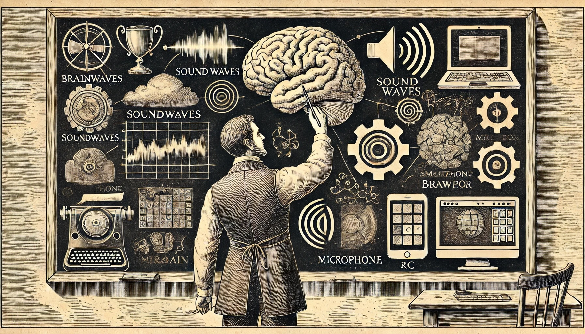

設計語音互動流程

在透過 NLU 引擎了解使用者的意圖之後，我們就可以開始嘗試達成對應的任務。我們的對話引擎平時維持一份意圖與流程之間的表格，收到意圖之後，就從表格中取出這段流程執行。
語音流程的輸入與輸出
一段語音互動的流程，可能會被稱做 Dialog，在英文中，Dialog 與 Conversation 的意義不太一樣，雖然在中文中都叫做對話，但 Dialog 更具備一種事先安排好，是在劇本當中安排好的兩個角色之間的談話，比起 Conversation，更貼近語音助理要完成任務的過程。也可能稱作 VUI flow，VUI 是 Voice User Interface 的縮寫。以下我們統稱 VUI flow。
一段 VUI flow 會以一個意圖開始，在設計上，我們就不太能夠讓多段不同的 VUI flow 對應到同一個意圖上，而是一個 VUI flow，會根據傳入的 Slots 以及當前的系統狀態，走進同一個 VUI flow 的不同分支。而要完成任務，往往會需要一些必須的 Slot，像是導航就會需要知道目的地，訂餐就會需要品項與數量等。
同時，也可能會有一些非必要的 Slot，但會決定我們如何執行任務，像是導航的語音命令中，可能會多出一個途經點或是迴避點的選項，使用者可能會說「導航到台北動物園，中途經過加油站，但是想辦法避開塞車路段，不要走國道」這樣複雜的句子。遇到必要的 Slot，我們大概就要進入多輪對話追問使用者，一段 VUI flow，可說就是在蒐集必要的 Slot 的過程。
之後，這段流程往往需要知道一些外部狀態，像是執行前述的導航流程時，我們可能就會想知道目前系統是否已經在導航中，向使用者確認是否需要停止目前的導航工作，如果確定要終止目前的導航，我們才會執行新的導航。
這種向外部詢問狀態，或是要求外部執行工作的呼叫，通常叫做 System Call。這些 System Call 通常也是語音開發者與 App 開發者之間溝通的介面，語音開發者專注在 VUI flow 的設計與開發，不用關心實際上導航這部份的細節，而 App 開發者也只要專心在這些 System Call 的實作。最後，無論成功或失敗，我們可以回應使用者一段 TTS，最後結束對話。TTS 可以是一段固定的文字，也可以交給 NLG 引擎產生，另外，也可能用一小段音效—像是嗶嗶聲—代替。
所以，我們可以分析出，一段語音互動流程，有著以下的輸入與輸出:
輸入
- Intent
- Slots (必要與非必要)
- 獲取外部狀態的 System Call
輸出
- 執行工作的 System Call
- TTS 回應，或是用一些替代的音效
- 該結束對話，還是該進入下一輪對話，而下一輪對話該是哪個 VUI flow
繪製 VUI flow 流程圖
根據上述的輸入與輸出，我們通朝用 UML 當中的 Activity Diagram，表現對話過程中會有哪些分支。以下以上述的導航流程為例：
在設計一個 VUI flow 時，我們通常也會附上如何啟動這個流程、滿足可以車取出意圖的例句（Utterance），方便日後的測試以及功能驗證。像是：
- 開始導航
- 我想要去台北動物園
- 帶我去動物園，不要上高架橋…
在上圖中，可以注意到，其實這張圖是多個 VUI flow 組成的，中間有一段確認是否要終止導航的流程，就是以「確認」、「取消」等意圖，開啟一段新的 VUI flow。
這個時候，通常會預期只會收到在限制範圍內的意圖，但使用者的行為可能千奇百怪—舉另外一個例子，如果是一套點餐系統，當使用者說「我要點餐」時，我們可能會回應「您想點什麼」，並且預期收到「我要一碗牛肉麵」這樣的回答，但使用者可能會說「有什麼可以點的」，這時候我們可能選擇回覆「我們不理解你的意圖」，或是必須再設計一條分支，念出一些熱門的餐點，然後再問一次想點什麼餐點。流程應該怎麼設計，最後還是要回歸使用者到底怎麼使用，以及團隊的使用者研究的結果。
VUI flow 的介面
在實際進入撰寫 VUI flow 之前，我們先設計一個屬於所有 VUI flow 的介面。
abstract class VuiFlow {
Future<void> handle(NluIntent intent);
Future<void> cancel() async {
delegate = null;
}
VuiFlowDelegate? delegate;
String get intent => '';
List<String> get slots => [];
String? get additionalNluPrompt => null;
}
這個介面分成三個部分：
- 這個 VUI flow 實際上的工作：當我們要使用這個 VUI flow 時，會去呼叫
handle這個 method - 這個 VUI flow 所需要的外部相依：集中在 delegate 中
- 其他的 metadata：包括什麼意圖會進入這個 VUI flow，期待收到哪些 Slot，以及是否需要額外的 LLM Prompt 協助抽取 Slot
在 delegate 中，我們定義了一個 VUI flow 怎麼在中途使用 TTS 引擎與 NLG 引擎，而如果他需要進入另外一輪的對話，可以用 onSettingCurrentVuiFlow 指定下一個 VUI flow 是什麼，並且用 onStartingAsr 重新開始 ASR 識別。另外，就是一個用來結束對話的 onEndingConversation。
abstract class VuiFlowDelegate {
Future<void> onPlayingPrompt(String prompt);
Future<void> onSettingCurrentVuiFlow(VuiFlow? vuiFlow);
Future<void> onStartingAsr();
Future<void> onEndingConversation();
Future<String?> onGeneratingResponse(String utterance,
{bool useDefaultPrompt = true});
}
另外，使用者可能隨時取消目前正在進行中的 VUI flow，像是在執行到一半的時候，就按下退出語音助理的按鈕，不但直接關閉 ASR 識別與 TTS 語音，也需要取消正在 handle method 中執行的工作。如果要做完整的取消的話，那每個 VUI flow 中，都需要一個叫做 cancelled 的變數，當這個變數為 true 時，handle 裡頭每一行，都要檢查 cancelled 是不是已經變成 true，如果是，就要退出。
在這邊先用了一個偷懶的辦法：只要把 delegate 設成 null 之後，這個 VUI flow 就不會有對外的聯繫。也不會繼續有 ASR 識別與 TTS 語音，不過 handle 其實還是會繼續往下執行。